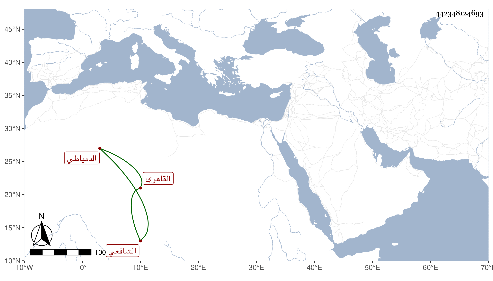

0902Sakhawi.DawLamic.ITO20230111-ara1.EIS1600.442348124693
Biography ID: 442348124693
320
عمر بن عبد الله بن محمد بن سليمان السراج بن الجمال الدمياطي ثم القاهري الشافعي صهر عبد الرحمن بن الفقيه موسى الماضي أبوه . نشأ فقرأ القرآن وغيره واشتغل وقرأ في الجوق وأقرأ في الطباق وخالط الناس سيما الخدام ونحوهم وباشر عند خير بك كاشف المحلة وكتب الخط الجيد وتنزل في الجهات وتردد للكافياجي ، وحج غير مرة وتردد لي وفي كلامه توقف . مات بالطاعون في رجب سنة سبع وتسعين بعد أن أهين من الدوادار عفا الله عنه .
